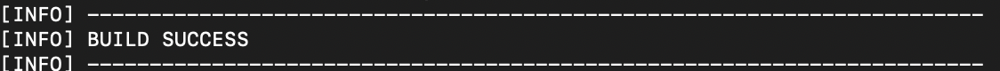
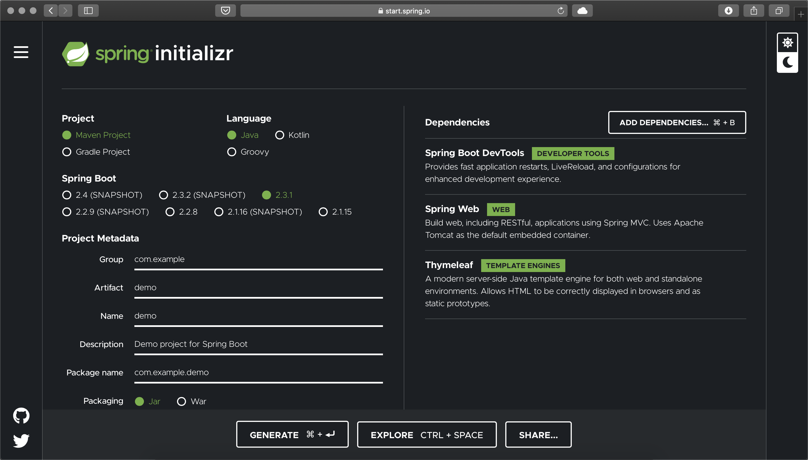
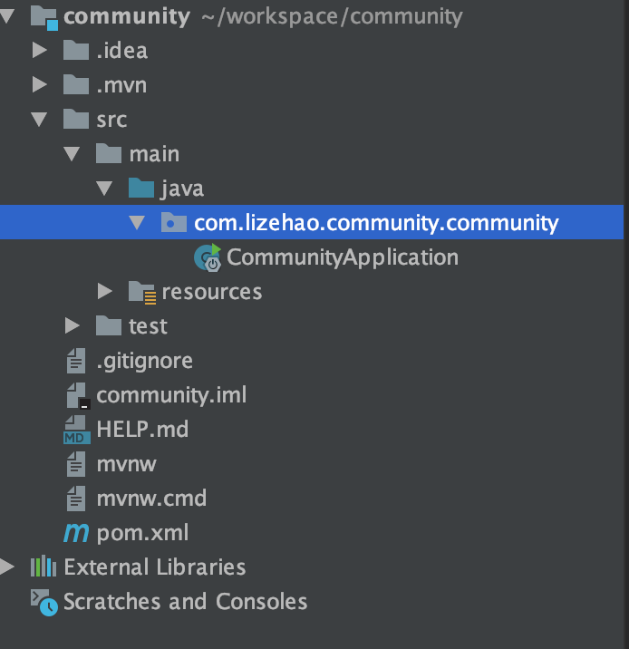
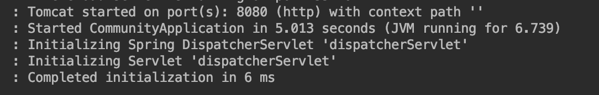

前言
本篇文章记录了学习SpringBoot和Maven基础的笔记，以及基于SpringBoot、SSM、Redis、Kafka等技术的讨论社区项目的开发环境配置
技术架构
- Spring Boot(方便入门Spring)
- SSM
Spring、Spring MVC(处理浏览器访问请求)、MyBatis(访问数据库) - Redis(操作内存的数据库)、Kafka（消息队列）、Elasticsearch（搜索引擎）
- Spring Security（管理系统权限）、Spring Actuator（监控）
开发环境
- 构建工具 :Apache Maven
- 开发工具:IDEA
- 数据库：MySQL、Redis
- 应用服务器：Apache Tomcat
- 版本控制:Git
Apache Maven
- 构建项目、管理项目中的jar包
- Maven仓库：存放构件的位置
本地仓库:安装在/usr/local目录下（OSX默认是隐藏这个文件夹的，从Terminal进入）
远程仓库：中央仓库(官网)、镜像仓库(阿里云等）、私服仓库(公司搭建）
加载构件时看本地有没有，没有的话从远程仓库下载
阿里云镜像仓库地址:maven.aliyun.com - 搜Mavenn的包
到maven.aliyun.com/mvn/search
或者mvnrepository.com（有建议下载）下搜索 - 下载包后复制Maven框里的代码粘贴到pom.xml里的
下面 - 常用命令
- 查看maven版本
mvn —version - 创建项目
1 | mvn archetype:generate -DgroupId=com.mycompany.app -DartifactId=my-app -DarchetypeArtifactId=maven-archetype-quickstart -DarchetypeVersion=1.4 -DinteractiveMode=false |
-DgroupId=后面是公司域名倒序+项目名
-DartifactId=项目名
-DarchetypeArtifactId=生成项目的模板ID
-DarchetypeVersion=版本
-DinteractiveMode=是否启用交互模式
创建时发现下载地址是maven.aliyun.com说明配置有效

出现这行代码说明创建成功
创建好后有pom.xml和src文件夹，src里面有main(正式代码)和test(测试代码)
- maven的项目结构
1 | my-app |
- 编译
cd到放pom.xml那个文件夹下输入命令：mvn compile
如果失败用sudo 再运行
编译完成后会多一个target文件夹 - 重新编译
maven clean compile
删除上次编译的并重新编译 - 编译好后测试
maven clean test
test是包含compile的
IDEA设置和创建Maven项目
- 在Build–Cuild Tools—Maven设置Maven home directory
注意在OSX上默认安装到/usr/local的，这个文件夹是隐藏的，需要
command+shift+g输入文件路径进入 - User setting file里勾选Override并把路径改为
/usr/local/apache-maven-3.3.9/conf/settings.xml
这是为了用阿里云的maven - 创建maven项目，选中Create from archetype，用配置模板
选org.apache.mavenarchetypesmaven-archetype-quickstart
然后按照maven命令里解释的设置名称新创建一个maven项目 - 在右面的Maven栏点开Lifecycle里就有各种Maven命令，直接双击就可以执行
Spring Boot
- Spring Boot 简介：
Spring Boot是由Pivotal团队提供的全新框架，其设计目的是用来简化新Spring应用的初始搭建以及开发过程。该框架使用了特定的方式来进行配置，从而使开发人员不再需要定义样板化的配置。 - Spring Boot特点
- 嵌入的Tomcat，无需部署WAR文件
- 简化Maven配置
- 自动配置Spring
- 绝对没有代码生成和对XML没有要求配置
- Spring Boot核心作用
- 起步依赖(每个添加的依赖都是用Maven添加了一系列的java包)、
- 自动配置
- 端点监控
Spring Initializr
- Maven构建项目要去一个一个搜索相关的包比较麻烦，然而通过Spring官方提供的Spring Initializr 来构建Maven项目，不仅完美支持IDEA和Eclipse，而且能自动生成启动类和单元测试代码，给开发人员带来极大的便利
- 进入start.spring.io，左边设置好名称版本，然后在右边添加依赖

先引入Thymeleaf（也可以用Freemarker）、Web、DevTools的依赖
发现现在没有aop依赖了，一会可以在pom.xml里手动加入
1 | <dependency> |
- 设置好生成以后，用IDEA打开，然后等待下载依赖，下载好，项目结构就会是这样子

这样一个Spring Boot项目就创建好了 - 一个简单的测试
在java下面的项目包下创建controller包，然后再controller包内新建TestController类，输入以下代码
1 | @Controller |
然后运行，就可以看到Tomcat已经把网页部署到8080端口

- 注意，如果服务器端口被占用，可以给Tomcat改端口：
打开resources文件夹里的application.properties文件，输入server.port=8081
还可以给项目设置访问路径server.servlet.context-path=/community
设置以后在网页访问就要输入localhost:8080/community/…